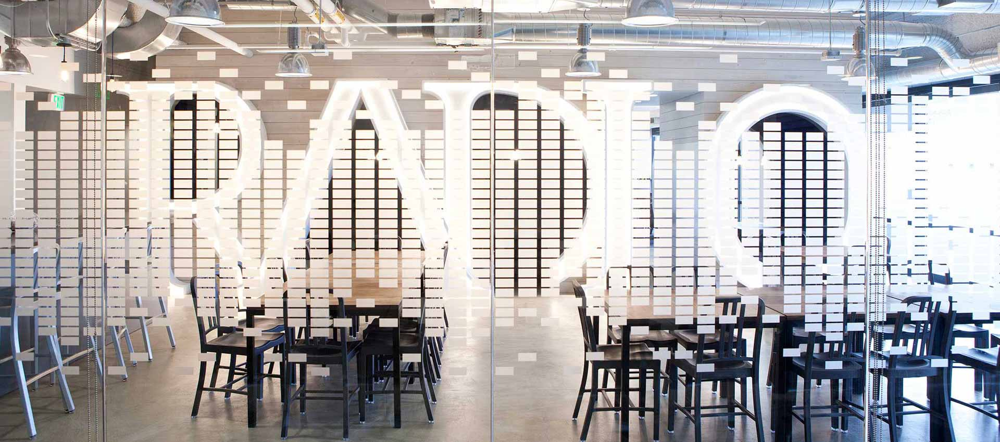
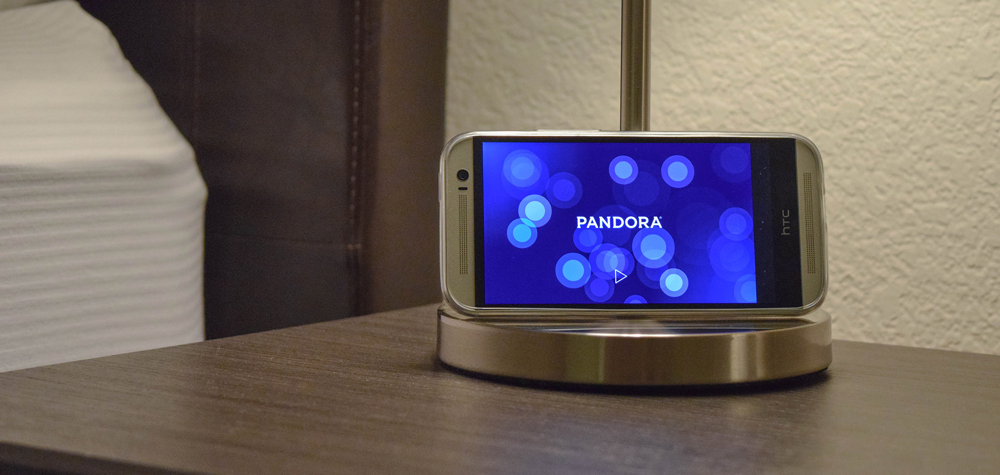
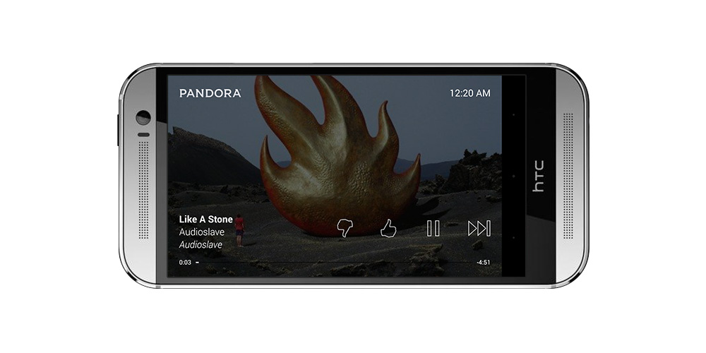
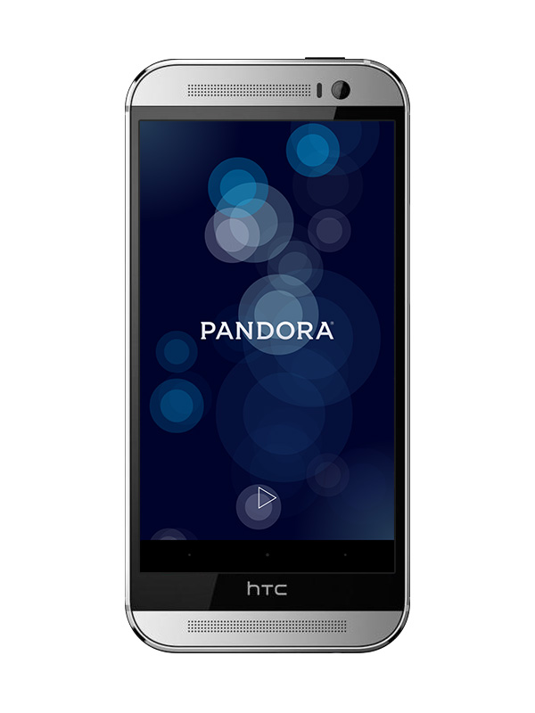
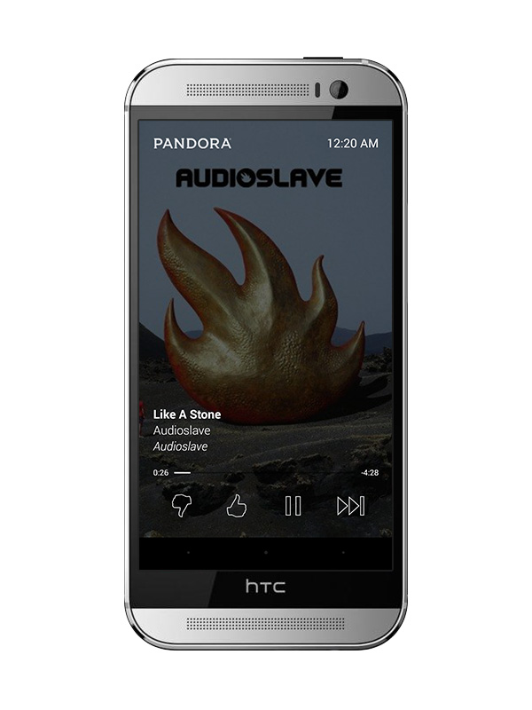

In the summer of 2014, I interned at Pandora in Oakland, California as a mobile software engineer. During my internship, I built and helped design a new feature called Pandora Daydream. This feature was released in earlier 2015 and made available for Pandora One users.

Pandora Daydream is an alternate listening interface for Pandora One users. Daydream is a lightweight screensaver-like feature that is accessible a device is docked or charging. When music is not playing, Daydream displays a smooth animation of moving and pulsating lights. The constant animation provides an aesthetic but subtle display that can be left on for hours when a device is on standby.

Tapping the Play button starts music from the user's most recent station. A lightweight interface presents full-screen album art, player controls, and track information. The dimmed overlay animates away after one minute to reveal the fullscreen album art behind. The album art continuously pans side-to-side to prevent potential screen burn-in.


The initial vision for Pandora Daydream was based on designs for Pandora on Android TV. The goal of Pandora on Android TV was to design a lightweight interface that provided users with a Pandora experience but optimized for a more aesthetic display piece. Due to the diversity of Android devices Pandora users listen on, Daydream had to be designed to look consistent on various screen sizes, resolutions, and orientation.